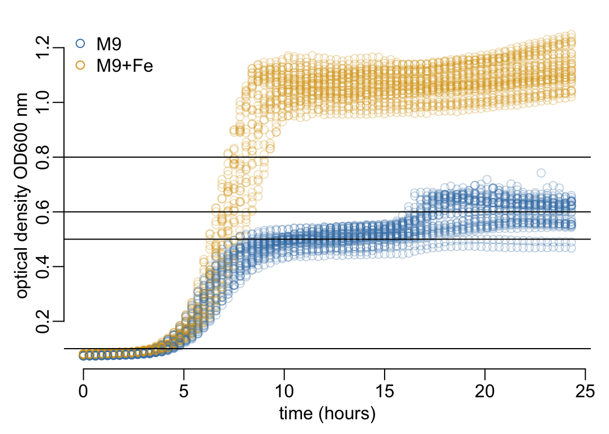
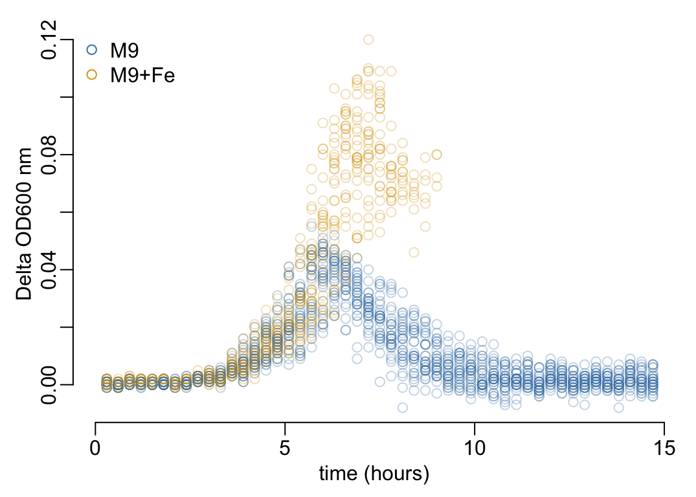
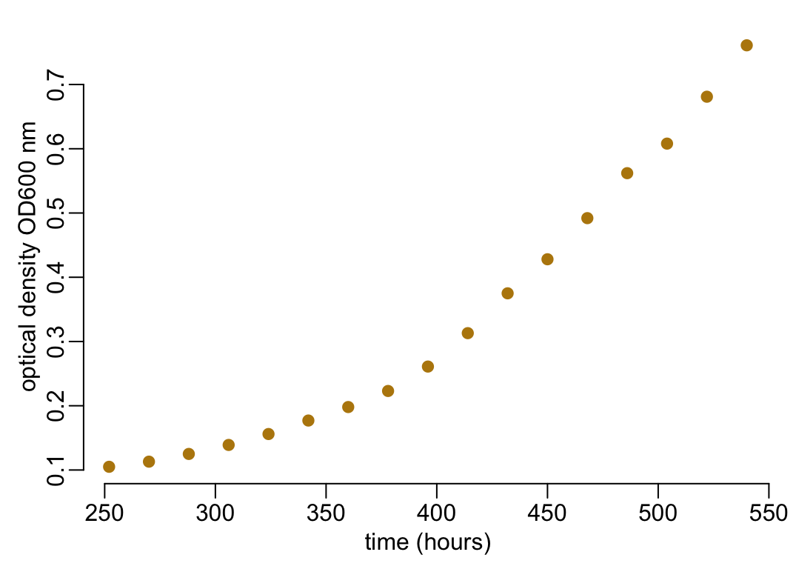
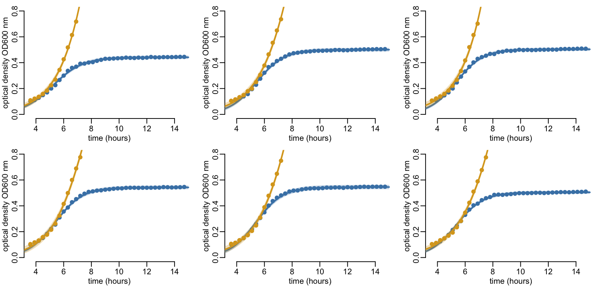
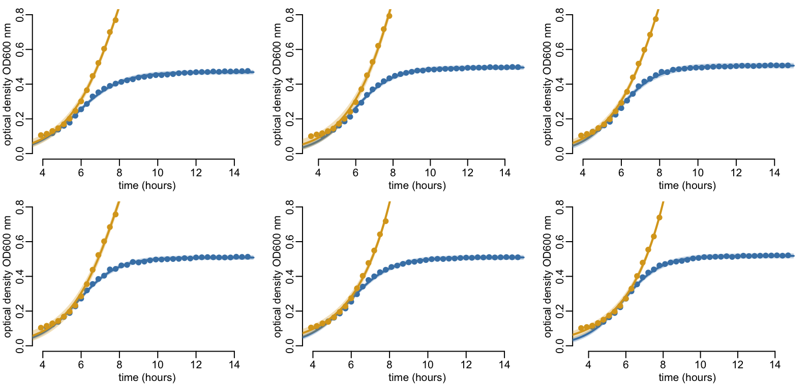
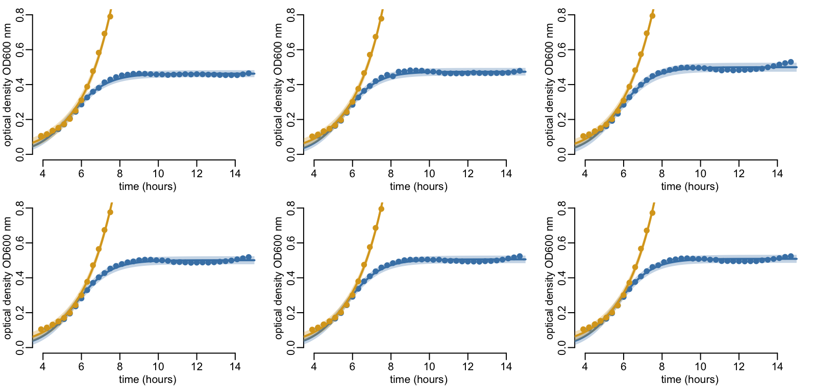
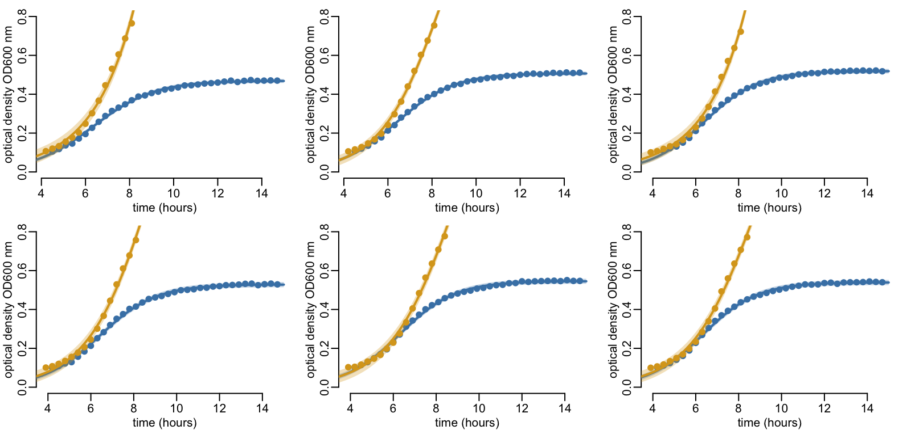
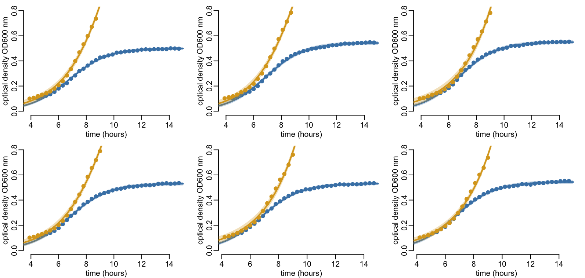
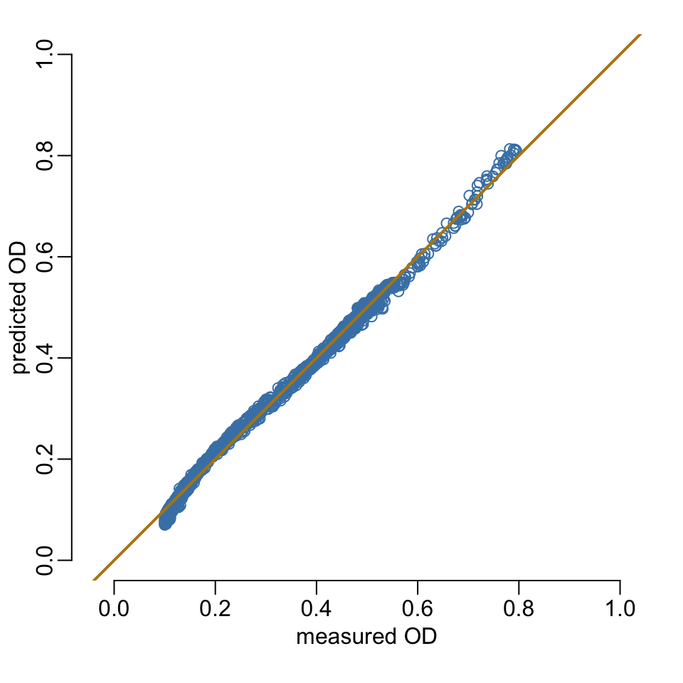

root <- paste0("/Users/", Sys.getenv("USER"), "/")K. pneumoniae growth curves
1 Constants
The files root:
The mirrored folder:
mirror_folder <- paste0(root, "GitHub/choisy/Kpneumoniae_plasmid/")The root of the data folders:
path2data <- paste0(root, "Library/CloudStorage/",
"OneDrive-OxfordUniversityClinicalResearchUnit/",
"GitHub/choisy/Kp_growth_curves/")The name of the data file:
data_file <- "CultureData_11523_Van.xlsx"Defining some colors:
col1 <- "steelblue"
col2 <- "goldenrod"
col3 <- "darkgoldenrod"2 Packages
Required packages:
required <- c("readxl", "tidyr", "dplyr", "purrr", "stringr", "magrittr", "bbmle",
"tibble")Installing those that are not installed yet:
to_install <- required[! required %in% installed.packages()[,"Package"]]
if (length(to_install)) install.packages(to_install)Loading the packages for interactive use:
invisible(sapply(required, library, character.only = TRUE))3 Functions
A function that excludes values from a vector x by their names e:
exclude <- function(x, e) x[grep(e, names(x), value = TRUE, invert = TRUE)]A tuning of the plot() function:
plot_od <- function(..., ylab = "optical density OD600 nm") {
plot(..., xlab = "time (hours)", ylab = ylab)
}A tuning of the bbmle::mle2() function:
mle3 <- function(...) mle2(..., method = "Nelder-Mead", control = list(maxit = 1e4))A tuning of the bbmle::coef() function:
coef2 <- function(x) exp(bbmle::coef(x))A tuning of the bbmle::confint() function:
confint2 <- function(x) exp(bbmle::confint(x))4 Data
Mirroring the data set if not already done:
data_file_full <- paste0(path2data, data_file)
if (!file.exists(data_file_full))
file.copy(paste0(mirror_folder, data_file), data_file_full)Loading the data:
(od_data <- data_file_full |>
read_excel() |>
group_by(Sample, Medium) |>
mutate(replicate = row_number()) |>
ungroup() |>
pivot_longer(- c(Sample, Medium, replicate), names_to = "time", values_to = "OD") |>
mutate(across(time, ~ .x |>
str_remove(" *h$") |>
as.numeric() |>
multiply_by(60) |>
round() |>
as.integer())))# A tibble: 4,920 × 5
Sample Medium replicate time OD
<chr> <chr> <int> <int> <dbl>
1 W M9 1 0 0.078
2 W M9 1 18 0.077
3 W M9 1 36 0.078
4 W M9 1 54 0.079
5 W M9 1 72 0.079
6 W M9 1 90 0.08
7 W M9 1 108 0.082
8 W M9 1 126 0.081
9 W M9 1 144 0.084
10 W M9 1 162 0.086
# ℹ 4,910 more rowsLooking at the levels:
(unique_levels <- od_data |>
select(-OD) |>
map(~ sort(unique(.x))))$Sample
[1] "W" "WE" "WH" "WV" "WVE"
$Medium
[1] "M9" "M9+Fe"
$replicate
[1] 1 2 3 4 5 6
$time
[1] 0 18 36 54 72 90 108 126 144 162 180 198 216 234 252
[16] 270 288 306 324 342 360 378 396 414 432 450 468 486 504 522
[31] 540 558 576 594 612 630 648 666 684 702 720 738 756 774 792
[46] 810 828 846 864 882 900 918 936 954 972 990 1008 1026 1044 1062
[61] 1080 1098 1116 1134 1152 1170 1188 1206 1224 1242 1260 1278 1296 1314 1332
[76] 1350 1368 1386 1404 1422 1440 1458Checking the regularity of time measurements:
unique(diff(unique_levels$time))[1] 18The number of combinations:
unique_levels |>
map_int(length) |>
reduce(`*`)[1] 4920Number of replicates per combination:
(nb_rep <- od_data |>
group_by(Sample, Medium, time) |>
tally())# A tibble: 820 × 4
# Groups: Sample, Medium [10]
Sample Medium time n
<chr> <chr> <int> <int>
1 W M9 0 6
2 W M9 18 6
3 W M9 36 6
4 W M9 54 6
5 W M9 72 6
6 W M9 90 6
7 W M9 108 6
8 W M9 126 6
9 W M9 144 6
10 W M9 162 6
# ℹ 810 more rowsChecking that we have all the combinations:
nrow(nb_rep)[1] 820Looking at the number of replicates per combination:
unique(nb_rep$n)[1] 6Let’s now look at the data. Let’s first set some colors:
col_set <- c(col1, col2)
col_set_names <- unique_levels$Medium
col_set_alpha <- col_set |>
adjustcolor(.3) |>
setNames(col_set_names)A function that plots the data:
plot_data <- function(x, y = OD, ...) {
x |>
mutate(across(time, ~ divide_by(.x, 60))) |>
slice_sample(prop = 1) |>
rename(y = {{ y }}) |>
with(plot_od(time, y, col = col_set_alpha[Medium], ...))
legend("topleft", legend = col_set_names, pch = 1, bty = "n", col = col_set)
}Plotting the OD values:
plot_data(od_data)
abline(h = c(.1, .5, .6, .8))
Plotting the \(\Delta\)OD values:
od_data |>
filter(time < 15 * 60, OD < .8) |>
group_by(Sample, Medium, replicate) |>
mutate(Delta_OD = c(NA, diff(OD))) |>
ungroup() |>
plot_data(Delta_OD, ylab = bquote( ~ Delta ~ "OD600 nm"))
5 Probability distributions
A function that builds probability distribution functions that package everything we need:
distribution <- function(name, d, q) {
attr(d, "q") <- q
attr(d, "name") <- name
d
}Definining the normal probability distribution function:
normal <- distribution("norm", function(x, mu, k) dnorm(x, mu, k, log = TRUE),
function(x, mu, k, ...) qnorm(x, mu, k, ...))Defining the log-normal probability distribution function:
log_normal <- distribution("lnorm",
function(x, mu, k) dlnorm(x, log(mu) - k^2 / 2, k, log = TRUE),
function(x, mu, k, ...) qlnorm(x, log(mu) - k^2 / 2, k, ...))Defining the gamma probability distribution function:
gammad <- distribution("gamma", function(x, mu, k) dgamma(x, k, k / mu, log = TRUE),
function(x, mu, k, ...) qgamma(x, k, k / mu, ...))6 Growth models
Defining the exponential growth model:
exponential_growth <- function(t, N0, r) {
N0 * exp(r * t)
}
attr(exponential_growth, "name") <- "exponential"
exponential <- list(
model = exponential_growth,
mLL_factory = function(x, f) {
function(N0, r, k) {
-sum(f(x$OD, exponential_growth(x$time, exp(N0), exp(r)), exp(k)))
}
},
ini_val = function(df, k = 1) {
p <- setNames(c(coef(lm(log(OD) ~ time, df)), k), c("N0", "r", "k"))
p[-1] <- log(p[-1])
as.list(p)
}
)Defining the logistic growth model:
#logistic_growth <- function(t, K, r, t0) {
# K / (1 + exp(-(t - t0) * r))
#}
#
#attr(logistic_growth, "name") <- "logistic"
#
#logistic <- list(
# model = logistic_growth,
#
# mLL_factory = function(x, f) {
# function(K, r, t0, k) {
# - sum(f(x$OD, logistic_growth(x$time, exp(K), exp(r), exp(t0)), exp(k)))
# }
# },
#
# ini_val = function(df, k = 1) {
# time <- df$time
# OD <- df$OD
# K <- max(OD)
# halfK <- K / 2 - min(OD) / 2 # (second term could be optional)
# evaluate <- function(x) approx(time, OD, x)$y
# distance <- function(x) abs(evaluate(x) - halfK)
# t0 <- optimize(distance, range(time))$minimum
# r <- df |>
# filter(time < t0) |>
# mutate(across(OD, log)) |>
# lm(OD ~ time, data = _) |>
# coef() |>
# extract(2) |>
# unname()
# as.list(log(c(K = K, r = r, t0 = t0, k = k)))
# }
#)logistic_growth <- function(t, K, r, t0) {
K / (1 + exp(-(t - t0) * r))
}
attr(logistic_growth, "name") <- "logistic"
ini_val_logistic = function(df, k = 1) {
time <- df$time
OD <- df$OD
K <- max(OD)
halfK <- K / 2 - min(OD) / 2 # (second term could be optional)
evaluate <- function(x) approx(time, OD, x)$y
distance <- function(x) abs(evaluate(x) - halfK)
t0 <- optimize(distance, range(time))$minimum
r <- df |>
filter(time < t0) |>
mutate(across(OD, log)) |>
lm(OD ~ time, data = _) |>
coef() |>
extract(2) |>
unname()
tibble(K = K, r = r, t0 = t0, k = k)
}
logistic <- list(
model = logistic_growth,
mLL_factory = function(x, f) {
function(K, r, t0, k) {
- sum(f(x$OD, logistic_growth(x$time, exp(K), exp(r), exp(t0)), exp(k)))
}
},
ini_val = function(df, k = 1) {
df |>
group_by(replicate) |>
group_modify(~ ini_val_logistic(.x, k)) |>
ungroup() |>
select(-starts_with("replicate")) |>
colMeans() |>
log() |>
as.list()
}
)7 Utility functions
A function that fits an exponential growth model by maximum-likelihood to data x using a probability distribution f:
calibrate <- function(x, m, f, start = NULL, k = 1, ...) {
if (is.null(start)) start <- m$ini_val(x, k)
out <- mle3(m$mLL_factory(x, f), start, ...)
out@data <- list(data = x, model = m$model, distribution = f)
out
}A function that retrieves the probability distribution used from a fitted model:
get_distr <- function(x) attr(x@data$distribution, "name")A function that retrieves the growth model used from a fitted model:
get_model <- function(x) attr(x@data$model, "name")A function that retrieves the data from a fitted model:
get_data <- function(x) x@data$datat_vals <- seq(0, 15 * 60, le = 512)
predictions <- function(x, t = t_vals, ci = .95) {
params <- coef2(x)
f <- attr(x@data$distribution, "q")
q <- function(mu, lower = FALSE) f((1 - ci) / 2, mu, params["k"], lower.tail = lower)
tibble(time = t,
fit = do.call(x@data$model, c(t = list(t), exclude(params, "k"))),
lwr = q(fit, TRUE),
upr = q(fit))
}A function that plots the model’s prediction:
plot_predictions <- function(x, col = col1, alpha = .3, add = FALSE, ...) {
with(x, {
t <- time / 60
if (! add) plot_od(t, fit, type = "n", ...)
polygon(c(t, rev(t)), c(lwr, rev(upr)), border = NA, col = adjustcolor(col, alpha))
lines(t, fit, col = col, lwd = 2)
})
}A function that adds data points:
add_data <- function(x, col = col3) {
with(get_data(x), points(time / 60, OD, col = col, pch = 19))
}Let’s combine them:
plot_fit <- function(pred, fit, ylim = NULL, col_data = col3, col_model = col1,
alpha = .3, ...) {
if (is.null(ylim)) {
OD <- get_data(fit)$OD
ylim <- c(min(c(pred$lwr, OD)), max(c(pred$upr, OD)))
}
plot_predictions(pred, col_model, alpha, ylim = ylim, ...)
add_data(fit, col = col_data)
}A wrapper:
plot_fit_and_data <- function(fit, ...) {
plot_fit(predictions(fit), fit, ...)
}8 Calibrations
A function that fits models listed in distr to the (potentially grouped) data frame df:
fit_models <- function(df, distributions, model) {
map_dfr(distributions,
\(d) df |>
group_modify(~ tibble(fitted = list(calibrate(.x, model, d)))) |>
ungroup())
}Let’s try it (takes 20”):
all_fits <- bind_rows(
(od_data |>
filter(between(OD, .1, .8), time < 15 * 60) |>
mutate(replicate2 = replicate) |> ## to protect replicate from group_by
group_by(Sample, Medium, replicate2) |>
fit_models(c(normal, log_normal, gammad), logistic) |>
rename(replicate = replicate2)),
(od_data |>
filter(between(OD, .1, .8), time < 15 * 60, Medium == "M9+Fe") |>
group_by(Sample, Medium, replicate) |>
fit_models(c(normal, log_normal, gammad), exponential))) |>
mutate(model = map_chr(fitted, get_model),
distr = map_chr(fitted, get_distr)) |>
relocate(fitted, .after = last_col())which gives:
all_fits# A tibble: 270 × 6
Sample Medium replicate model distr fitted
<chr> <chr> <int> <chr> <chr> <list>
1 W M9 1 logistic norm <mle2>
2 W M9 2 logistic norm <mle2>
3 W M9 3 logistic norm <mle2>
4 W M9 4 logistic norm <mle2>
5 W M9 5 logistic norm <mle2>
6 W M9 6 logistic norm <mle2>
7 W M9+Fe 1 logistic norm <mle2>
8 W M9+Fe 2 logistic norm <mle2>
9 W M9+Fe 3 logistic norm <mle2>
10 W M9+Fe 4 logistic norm <mle2>
# ℹ 260 more rowsLet’s check for convergence:
all_fits |>
mutate(converged = map_int(fitted, ~ .x@details$convergence)) |>
pull(converged) |>
is_greater_than(0) |>
any()[1] FALSEA substantially better fit with the normal distribution:
all_fits |>
mutate(LL = map_dbl(fitted, logLik)) |>
group_by(distr) |>
summarise(LL = sum(LL))# A tibble: 3 × 2
distr LL
<chr> <dbl>
1 gamma 5489.
2 lnorm 5491.
3 norm 6205.Same thing for the M9+Fe medium that additionally shows a substantially better fit with the logistic model:
all_fits |>
filter(Medium == "M9+Fe") |>
mutate(LL = map_dbl(fitted, logLik)) |>
group_by(model, distr) |>
summarise(LL = sum(LL), .groups = "drop")# A tibble: 6 × 3
model distr LL
<chr> <chr> <dbl>
1 exponential gamma 1180.
2 exponential lnorm 1181.
3 exponential norm 1189.
4 logistic gamma 1180.
5 logistic lnorm 1181.
6 logistic norm 1249.Let’s now compute the confidence intervals if the parameters (takes 1’30”)
CI_vals <- all_fits |>
filter(model == "logistic", distr == "norm") |>
mutate(CI = map(fitted, confint))Let’s look at the models showing difficulties computing the confidence intervals:
(CI_issues <- filter(CI_vals, ! map_lgl(CI, is.matrix)))# A tibble: 10 × 7
Sample Medium replicate model distr fitted CI
<chr> <chr> <int> <chr> <chr> <list> <list>
1 W M9+Fe 3 logistic norm <mle2> <mle2>
2 WE M9+Fe 5 logistic norm <mle2> <mle2>
3 WE M9+Fe 6 logistic norm <mle2> <mle2>
4 WH M9+Fe 1 logistic norm <mle2> <mle2>
5 WH M9+Fe 2 logistic norm <mle2> <mle2>
6 WV M9+Fe 1 logistic norm <mle2> <mle2>
7 WV M9+Fe 3 logistic norm <mle2> <mle2>
8 WVE M9+Fe 3 logistic norm <mle2> <mle2>
9 WVE M9+Fe 5 logistic norm <mle2> <mle2>
10 WVE M9+Fe 6 logistic norm <mle2> <mle2>There are all from the M9+Fe medium, which suggests that, for these models, the exponential growth might actually be a better fit. Let’s first compute the likelihood ratio tests:
p_vals <- all_fits |>
filter(Medium == "M9+Fe", distr == "norm") |>
select(-Medium, -distr) |>
group_by(model) |>
group_split() |>
map2(c("_expo", "_logi"), ~ rename_with(.x, \(x) paste0(x, .y), fitted)) |>
map(~ select(.x, -model)) |>
reduce(left_join, c("Sample", "replicate")) |>
mutate(LRTp = map2_dbl(fitted_expo, fitted_logi, ~ anova(.x, .y)[2, 5])) |>
select(-fitted_expo, -fitted_logi)Let’s look at the p-values of these tests for the model where the computation of the confidence intervals failed:
CI_issues |>
select(Sample, replicate) |>
left_join(p_vals, c("Sample", "replicate"))# A tibble: 10 × 3
Sample replicate LRTp
<chr> <int> <dbl>
1 W 3 0.827
2 WE 5 0.0784
3 WE 6 0.715
4 WH 1 0.719
5 WH 2 0.846
6 WV 1 0.181
7 WV 3 0.710
8 WVE 3 0.511
9 WVE 5 0.00329
10 WVE 6 0.875 Not sure what is going on with replicate 5 of WVE:
od_data |>
filter(between(OD, .1, .8), time < 15 * 60,
Medium == "M9+Fe", Sample == "WVE", replicate == 5) |>
with(plot_od(time, OD, col = col3, pch = 19))
Let’s check whether the exponential model does fix the issue as expected:
CI_with_exponential <- all_fits |>
filter(Medium == "M9+Fe", model == "exponential", distr == "norm") |>
semi_join(CI_issues, c("Sample", "replicate")) |>
mutate(CI = map(fitted, confint))which gives:
CI_with_exponential# A tibble: 10 × 7
Sample Medium replicate model distr fitted CI
<chr> <chr> <int> <chr> <chr> <list> <list>
1 W M9+Fe 3 exponential norm <mle2> <dbl [3 × 2]>
2 WE M9+Fe 5 exponential norm <mle2> <dbl [3 × 2]>
3 WE M9+Fe 6 exponential norm <mle2> <dbl [3 × 2]>
4 WH M9+Fe 1 exponential norm <mle2> <dbl [3 × 2]>
5 WH M9+Fe 2 exponential norm <mle2> <dbl [3 × 2]>
6 WV M9+Fe 1 exponential norm <mle2> <dbl [3 × 2]>
7 WV M9+Fe 3 exponential norm <mle2> <dbl [3 × 2]>
8 WVE M9+Fe 3 exponential norm <mle2> <dbl [3 × 2]>
9 WVE M9+Fe 5 exponential norm <mle2> <dbl [3 × 2]>
10 WVE M9+Fe 6 exponential norm <mle2> <dbl [3 × 2]>Replacing the issues encountered with the logistic models with exponential models:
(CI_vals2 <- CI_vals |>
anti_join(CI_issues, c("Sample", "Medium", "replicate")) |>
bind_rows(CI_with_exponential) |>
arrange(Sample, Medium, replicate))# A tibble: 60 × 7
Sample Medium replicate model distr fitted CI
<chr> <chr> <int> <chr> <chr> <list> <list>
1 W M9 1 logistic norm <mle2> <dbl [4 × 2]>
2 W M9 2 logistic norm <mle2> <dbl [4 × 2]>
3 W M9 3 logistic norm <mle2> <dbl [4 × 2]>
4 W M9 4 logistic norm <mle2> <dbl [4 × 2]>
5 W M9 5 logistic norm <mle2> <dbl [4 × 2]>
6 W M9 6 logistic norm <mle2> <dbl [4 × 2]>
7 W M9+Fe 1 logistic norm <mle2> <dbl [4 × 2]>
8 W M9+Fe 2 logistic norm <mle2> <dbl [4 × 2]>
9 W M9+Fe 3 exponential norm <mle2> <dbl [3 × 2]>
10 W M9+Fe 4 logistic norm <mle2> <dbl [4 × 2]>
# ℹ 50 more rows9 Diagnostics
plot_replicates <- function(bm, rep, colA = col1, colB = col2) {
medium1 <- bm[[rep]]
medium2 <- bm[[rep + 6]]
xlim <- c(min(c(get_data(medium1)$time, get_data(medium2)$time)) / 60, 15)
plot_fit_and_data(medium1, col_data = colA, col_model = colA,
xlim = xlim, ylim = c(0, .8))
plot_fit_and_data(medium2, col_data = colB, col_model = colB, add = TRUE)
}plot_strain <- function(strain) {
opar <- par(mfrow = 2:3, plt = c(.12, .97, .17, .95))
for (i in 1:6) plot_replicates(strain, i)
par(opar)
}best_models <- CI_vals2 |>
arrange(Sample, Medium, replicate) |>
pull(fitted)
seq(1, length(best_models), 12) |>
map(~ extract(best_models, .x:(.x + 11))) |>
walk(plot_strain)




A function that computes a model’s prediction at the observed data points:
observations_predictions <- function(fitted_model) {
the_data <- get_data(fitted_model)
left_join(the_data, predictions(fitted_model, the_data$time), "time")
}Let’s look at the relationship between model prediction and measured values:
best_models |>
map(observations_predictions) |>
bind_rows() |>
with(plot(OD, fit, col = col1, xlim = 0:1, ylim = 0:1, asp = 1,
xlab = "measured OD", ylab = "predicted OD"))
abline(0, 1, lwd = 2, col = col3)
10 Comparisons
CI_vals2 |>
select(Sample, Medium) |>
unique()# A tibble: 10 × 2
Sample Medium
<chr> <chr>
1 W M9
2 W M9+Fe
3 WE M9
4 WE M9+Fe
5 WH M9
6 WH M9+Fe
7 WV M9
8 WV M9+Fe
9 WVE M9
10 WVE M9+Fe CI_vals2# A tibble: 60 × 7
Sample Medium replicate model distr fitted CI
<chr> <chr> <int> <chr> <chr> <list> <list>
1 W M9 1 logistic norm <mle2> <dbl [4 × 2]>
2 W M9 2 logistic norm <mle2> <dbl [4 × 2]>
3 W M9 3 logistic norm <mle2> <dbl [4 × 2]>
4 W M9 4 logistic norm <mle2> <dbl [4 × 2]>
5 W M9 5 logistic norm <mle2> <dbl [4 × 2]>
6 W M9 6 logistic norm <mle2> <dbl [4 × 2]>
7 W M9+Fe 1 logistic norm <mle2> <dbl [4 × 2]>
8 W M9+Fe 2 logistic norm <mle2> <dbl [4 × 2]>
9 W M9+Fe 3 exponential norm <mle2> <dbl [3 × 2]>
10 W M9+Fe 4 logistic norm <mle2> <dbl [4 × 2]>
# ℹ 50 more rowsod_data |>
filter(Sample == "W", Medium == "M9") |>
filter(between(OD, .1, .8), time < 15 * 60) |>
# mutate(replicate2 = replicate) |> ## to protect replicate from group_by
group_by(Sample, Medium) |>
fit_models(c(normal, log_normal, gammad), logistic)# A tibble: 3 × 3
Sample Medium fitted
<chr> <chr> <list>
1 W M9 <mle2>
2 W M9 <mle2>
3 W M9 <mle2># rename(replicate = replicate2)